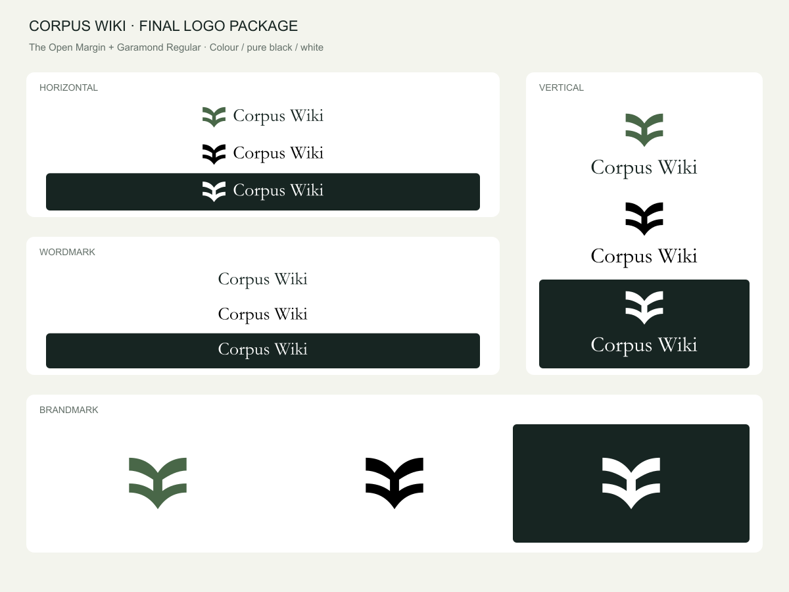

FINAL IDENTITY · 27 OCTOBER 2026Corpus Wiki
The Open Margin + Garamond Regular. You chose symbol 09 and font F10 for its distinctive W. Production lettering is outlined, so the logo displays correctly without installing the font.

Choose an arrangement
| Folder | Use |
|---|
| 01-Vertical | Stacked identity for covers and centered placements. |
| 02-Horizontal | Primary logo for headers, signatures and wide placements. |
| 03-Brandmark | The symbol alone for avatars and compact icons. |
| 04-Wordmark | Garamond lettering alone when the name is sufficient. |
Colour versions
Green
#496748 · RGB 73,103,72
Charcoal
#172522 · RGB 23,37,34
Pure black
#000000 · RGB 0,0,0
White
#FFFFFF · RGB 255,255,255
Full-Colour uses green for the symbol and charcoal for the lettering. Black uses pure black throughout. White and Inverse are intentionally identical all-white treatments; both folder names are supplied for predictable navigation. Their SVG and PNG backgrounds are transparent. White JPEGs are shown on charcoal because JPEG cannot store transparency.
Pick a file
| Format | Purpose |
|---|
| SVG · Digital/RGB | Scalable outlined vector for websites and design tools. |
| PNG · Digital/RGB | Transparent image for documents, slides and overlays. Filenames state the exact pixel width. |
| JPEG · Digital/RGB | Opaque image on white, or on charcoal for white/inverse art. |
| PDF · Print/CMYK | Scalable vector artwork with actual CMYK fills and outlined lettering. |
| EPS · Print/CMYK | Vector alternative for compatible print and layout workflows. |
The print files use a documented, unprofiled DeviceCMYK conversion, not a press-matched ICC conversion. Ask your printer to proof colour for the intended paper and press. The black files use C0 M0 Y0 K100. White CMYK artwork contains no process ink; it is not a spot-white ink separation.
No native Adobe Illustrator file or Pantone separation is claimed. Editable SVG masters are supplied instead. All logo PDF/EPS files contain paths rather than rasterized logos.
Space and size
Leave at least one-quarter of the symbol's visible height around the complete logo. For the wordmark alone, leave half the visible C height. The supplied artboards already include that space; preserve it when positioning or cropping.
Use the horizontal logo at a viewport height of 56px or larger to retain Garamond's finer strokes. Use stacked and standalone wordmark versions at 240px wide or larger. The standalone symbol is checked at 24px and above. These are practical screen recommendations, not minimum print sizes for every process. Use larger artwork when the output or viewing distance needs it.
Keep the original proportions. Avoid stretching, changing the W, adding outlines or shadows, or using the green version on a background with insufficient contrast.
Editable source
Source contains outlined SVG masters, an editable-text horizontal SVG, and the chosen font's provenance. The editable-text file needs a properly licensed local copy of Garamond Regular, version 2.40, to reproduce the lettering. Font binaries are not included. Production SVG/PDF/EPS lettering is already outlined.
Manifest.json records export tools and colour-space details. Verification.json records the export checks. Rejected concepts and contest reports are kept outside this finished package.